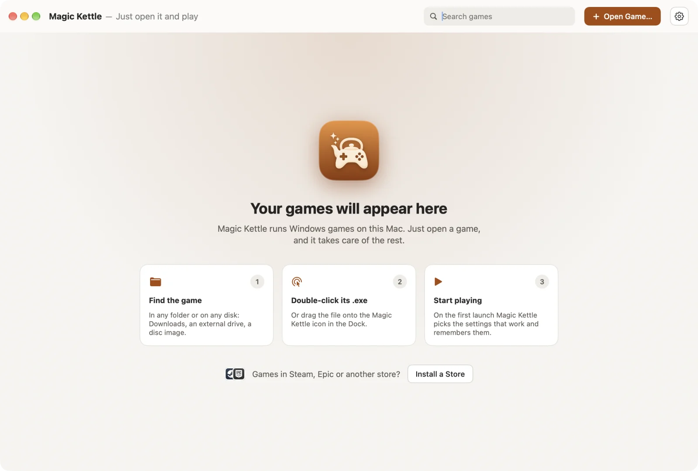
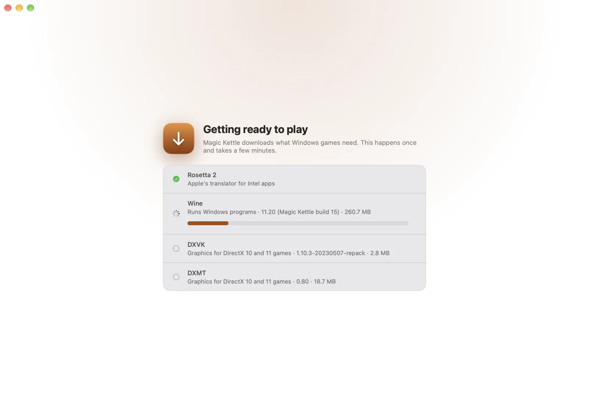

How it works
You do one thing: open the game. Everything else is EscApp's job. No settings to pick, no guides to read, no Windows to install.
You open the game
Double-click its .exe in Finder, or drop the game's folder on EscApp. Installers work too.
EscApp works it out
It looks at the game, sets up everything it needs and tries settings until the game runs well. On its own, while you wait a moment.
You play
The settings that worked are remembered, so from then on the game simply starts.
See it
The whole app is a library of your games. There is nothing else to learn.


Made to stay out of your way
Everything a Windows game expects is handled for you, quietly.
DirectX 9, 10 and 11
EscApp reads the game and picks how to draw it on Metal. If the first choice fails, it tries the next.
Components installed for you
Visual C++, .NET and RPG Maker's run time packages come from their publishers, only when a game needs them.
Your saves in one place
All games share one profile, so saves and settings stay put however many games you add.
Old games, made bigger
Games built for small screens are enlarged smoothly instead of switching your Mac's display.
Japanese games
Games made for Japanese Windows start with the right language and fonts, so the text reads correctly.
Private and open
Nothing about you or your games is sent anywhere. Every download is checked against a pinned fingerprint. The code is Apache-2.0.
Works today
Free and open source. More games and features arrive with every update.
- Works now: DirectX 9–11 games, Unity games, RPG Maker XP/VX/VX Ace, games that need Visual C++ or .NET.
- Stores: Steam, Epic Games Store, GOG Galaxy, EA app and Ubisoft Connect install with one button.
- Later: DirectX 12.
- Needs: a Mac with Apple Silicon and macOS 15 or later.